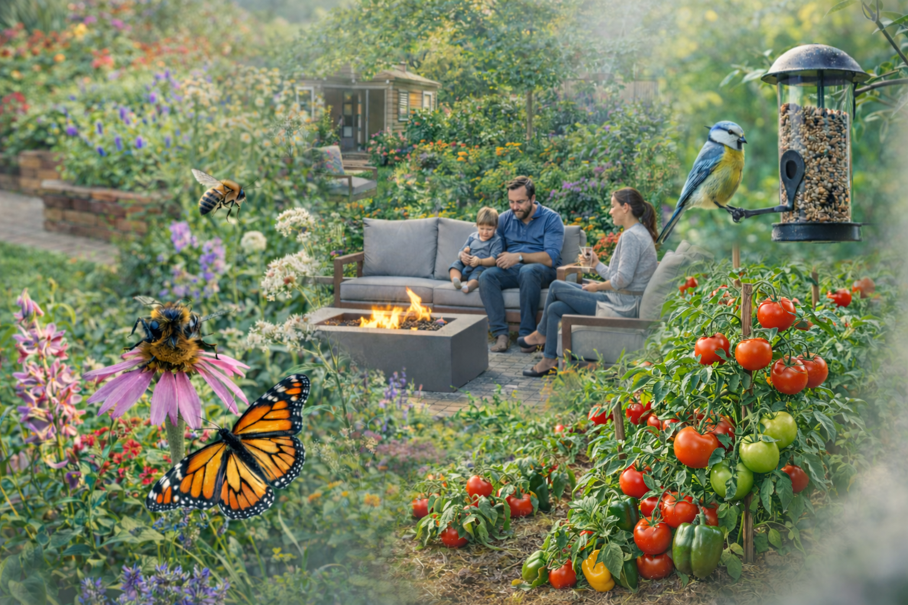
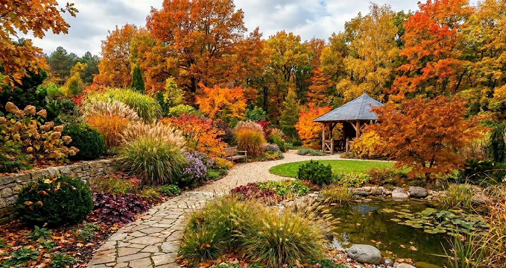
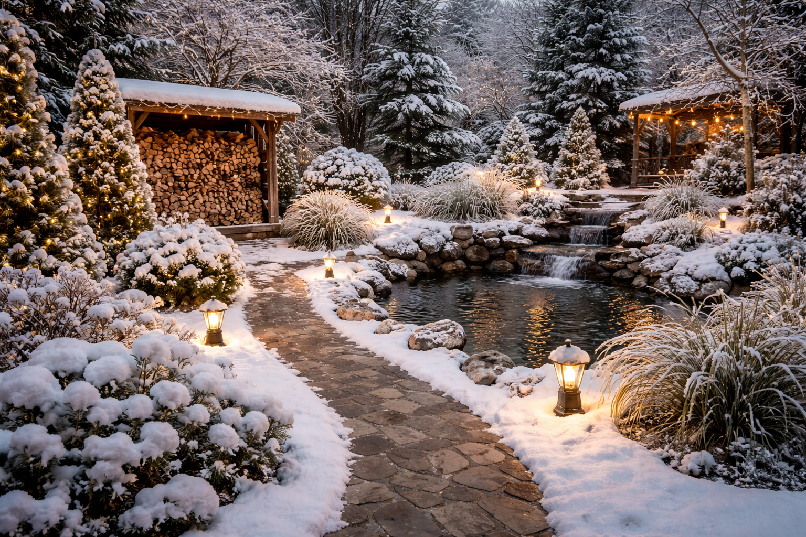
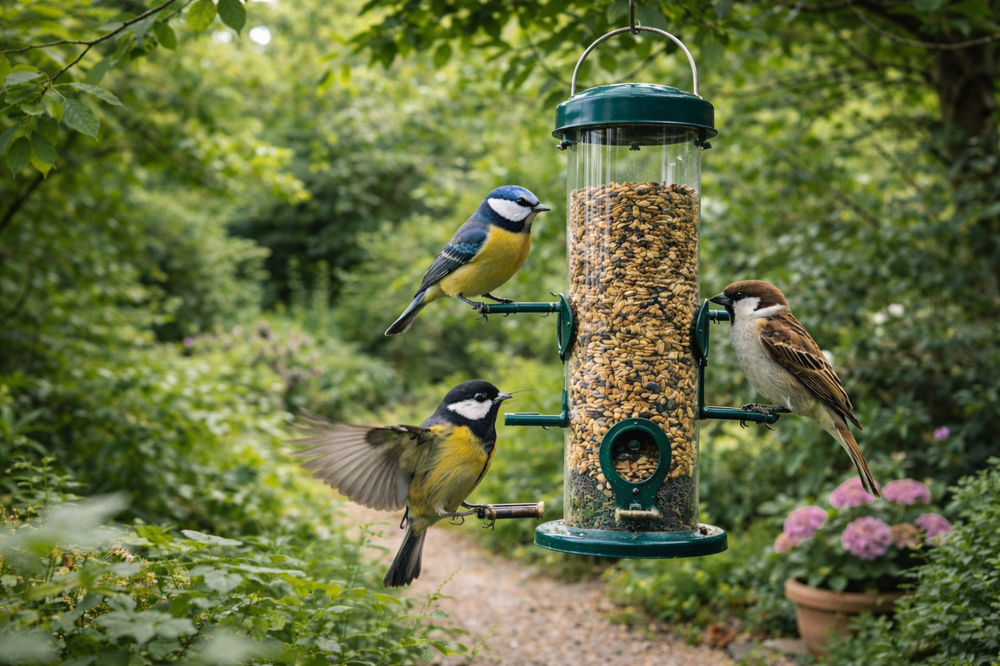
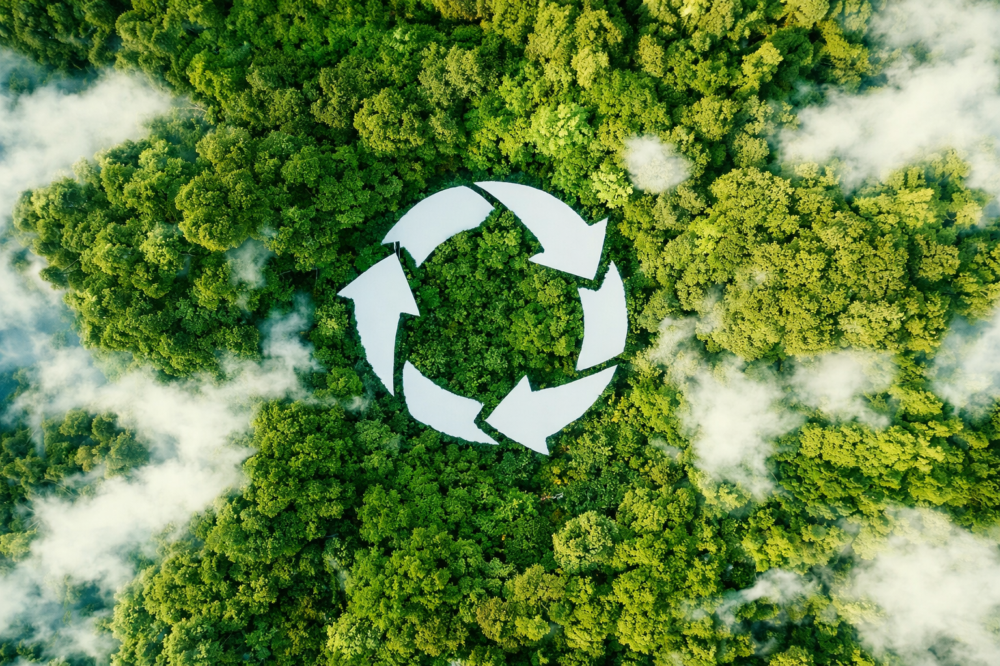
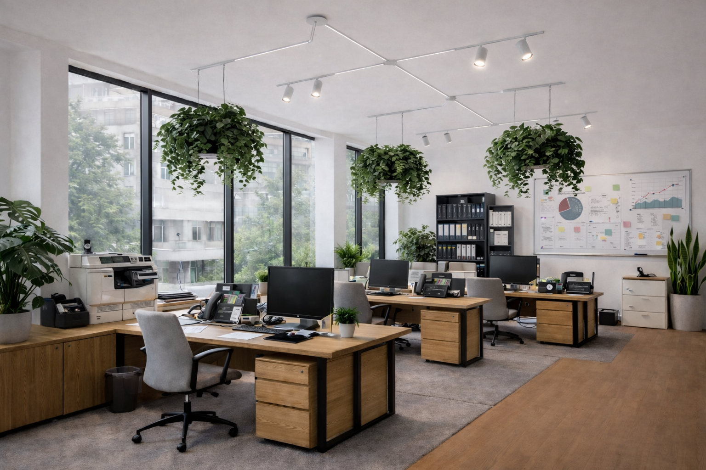

Célunk olyan kertek létrehozása, amelyek egyszerre egyediek, élvezhetők és funkcionálisak. Hiszünk abban, hogy a kert nemcsak szép díszlet, hanem élő ökoszisztéma is lehet: növényeinkkel segítjük a beporzókat (méheket, pillangókat) és a madarakat, így növeljük a biodiverzitást és a természetes kártevő-ellenőrzést
Cégünk vállalja magán- és vállalati ügyfelek teljes körű ellátását, Magyarország bármely pontján. Akár egy zöld, funkcionális játszóteret, akár letisztult, elegáns díszkertet szeretnél – csapatunk minden igényt magas színvonalon kiszolgál.

A kert tavaszi „felébresztése” egész évre alapot ad. Először is gondosan eltávolítjuk a téli lombhulladékot és elhalt növényi részeket, hogy megakadályozzuk a...
A nyári szezonban a folyamatos öntözés és gondos karbantartás a legfontosabb. A növényeket célszerű kora reggel vagy este öntözni, amikor kevesebb a párolgás, így a víz közvetlenül a...

Ősszel betakarítjuk a nyári terméseket, és megtisztítjuk a kertet az elhalt egynyári növényektől és lehullott levelektől. Ezáltal a kórtani kockázat csökken, és a talaj tápanyagdús komposztal...

A téli hónapokban a kert pihen, a feladatok általában a téliesítés körül forognak. A nehezebb metszéseket és ritkításokat is ekkor érdemes elvégezni, mert a növények ekkor...

Ma már nem elegendő pusztán szép kerteket építeni: egy jól tervezett kert támogatja a természetes ökoszisztémát is. Különösen fontos, hogy...

Ma már nem elegendő pusztán szép kerteket építeni: egy jól tervezett kert támogatja a természetes ökoszisztémát is. Különösen fontos, hogy...
A hasznos kert megteremtésekor olyan növényeket ültetünk, amelyekben nem csak gyönyörködhetünk de terméseiket nyugodt szívvel el is fogyaszthatjuk...
A szárazságtűrő kertstílus olyan alacsony fenntartási igényű növényeket használ, amelyek kevés vízzel is jól érzik magukat. Gyakran mediterrán és...
Irodákba és üzleti környezetekbe is telepítünk zöldfalakat, nagyméretű szobanövényeket és dekoratív növénycsoportokat. Ezek a növények nemcsak esztétikusak: laboratóriumi vizsgálatok szerint növelik a helyiség relatív páratartalmát és csökkentik a levegőszárazságból eredő kellemetlenségeket .
Emellett a lakberendezőként használt konyhakerti elemek – mint fűszernövény-élőfal vagy kisebb zöldségágy – javítják a belső légminőséget, mivel a növények felszívják a káros VOC-szennyezőket és a szén-dioxidot . Eredmény: a növényekkel díszített iroda vonzóbbá válik, a dolgozók nagyobb elégedettséget és kevesebb légúti panaszt jelentenek .

A nehéz, veszélyes fakivágás is profi kezekben van. Tapasztalt arboristáink és alpintechnikusaink gondoskodnak a kertek fáiról és bokroiról. Minden fát értékként kezelünk, ezért ha egy fa betegsége vagy balesetveszély miatt eltávolítása válik szükségessé, azt mindig legnagyobb körültekintéssel végezzük el . Magasan mászunk és kötéltechnikával dolgozunk, hogy precízen, emelőkosaras daruzás nélkül is biztonságosan lebonthassuk a fákat anélkül, hogy az alatta lévő tereptárgyak megsérülnének.
Munkánkhoz csak kiváló minőségű láncfűrész-apparátust és védőfelszerelést használunk – biztonsági sisakot, kötéles biztosítást és erőforrásokat – valamint rendszeresen karbantartjuk ezeket az eszközöket . Így garantáltan gyorsan, biztonságosan szabadítjuk meg ingatlanodat a nemkívánatos vagy veszélyessé vált fáktól.
A kert minden napja alatt gondoskodunk a növények optimális vízellátásáról. Modern csepegtető és szórófejes rendszereket telepítünk, amelyek a víz nagy részét közvetlenül a gyökerek közelébe juttatják, minimálisra csökkentve a párolgási veszteséget . Számítógépes vezérlők, időjárás- és talajnedvesség-szenzorok alkalmazásával a rendszer intelligensen reagál az aktuális igényekre.
Valós idejű adatokat felhasználva csak akkor és annyi vizet kap a kert, amikor tényleg szüksége van rá – például megállítja az öntözést, ha esik az eső, vagy felfüggeszti a locsolást magas páratartalom mellett . Így nemcsak áramlik minden csepp víz a növényekhez, hanem jelentős vízmegtakarítást is elérünk: a smart öntözés révén zöldebb és költséghatékonyabb kerteket alakítunk ki .
Töltsd ki honlapunk Ajánlatkérés űrlapját néhány alapadat megadásával, és szakértő munkatársunkon belül részletes, személyre szabott árajánlatot küldünk.
Elégedett ügyfeleink visszajelzése szerint átlátható és segítőkész ajánlataink megkönnyítik a döntést. Felmérés nélkül is szívesen adunk tanácsot, keress minket elérhetőségeinken, hogy ingyenes konzultáción beszélhessük meg elképzeléseidet!